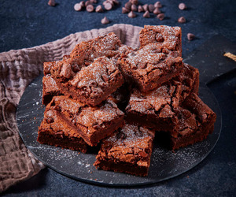

BROWNIE

INGREDIENTES
1 Barra de Mantequilla fundida (90 g)
1/4 Taza de Leche Condensada
1 Huevo
3/4 Taza de Alimento en Polvo para Preparar Bebida Sabor a Chocolate
2/3 Taza de Harina de trigo pasada por un colador
1/2 Cucharadita de Polvo para hornear
1/2 Taza de Frambuesas
1/4 Taza de Azúcar glass
6 Hojas de Menta fresca desinfectadas
INSTRUCCION
PASO 1
Horno precalentado a 180 °C.
PASO 2
Mezcla la mantequilla con la Leche Condensada, el huevo, el Alimento en Polvo para Preparar Bebida Sabor a Chocolate, la harina y el polvo para hornear hasta integrar por completo.
PASO 3
Vierte en un molde cubierto con papel encerado y hornea a 180 °C de 25 a 30 minutos; deja enfriar. Desmolda, corta en cuadros, decora con las frambuesas, el azúcar glass y las hojas de menta.